Fique por dentro da
cena indie brasileira
Lançamentos, bastidores, entrevistas e tudo que acontece no universo dos jogos independentes do Brasil.
Notícias
15 artigos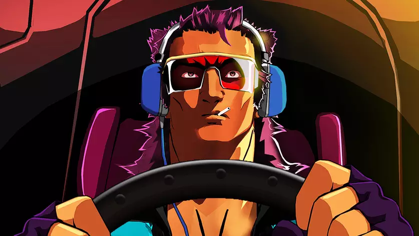
Mullet Mad Jack celebra lançamento no Switch: "Sensacional"
Jogo brasileiro estava em destaque durante a gamescom latam 2026
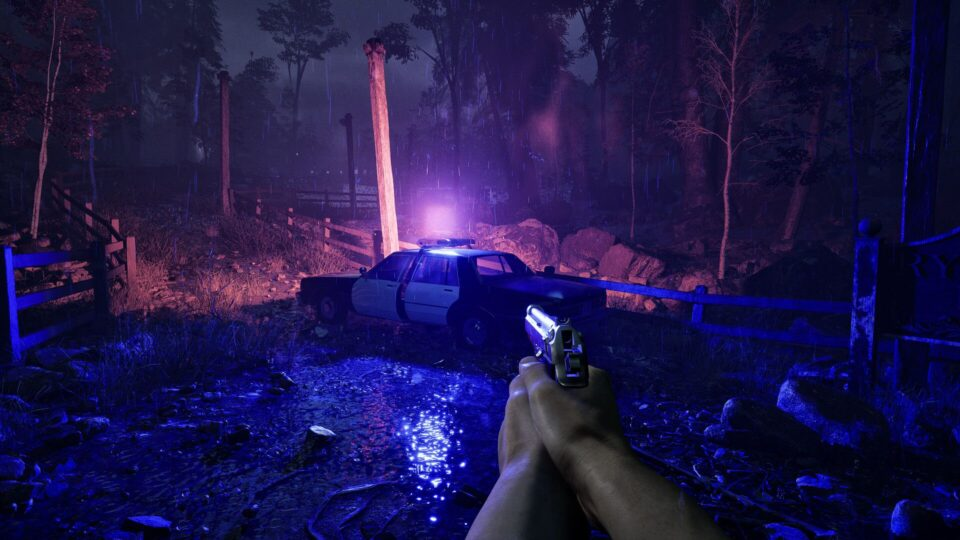
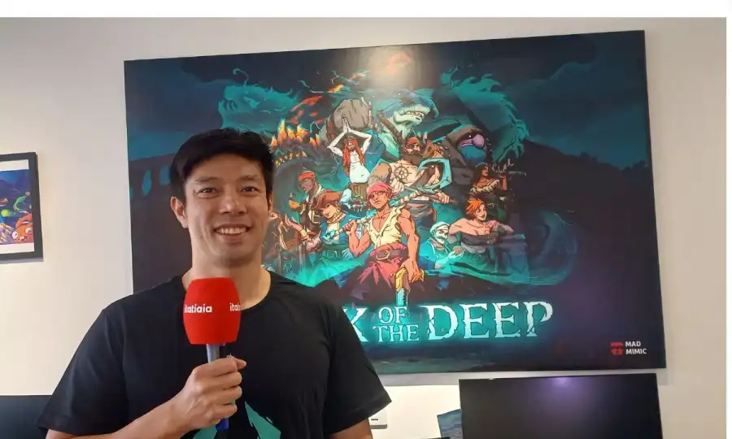
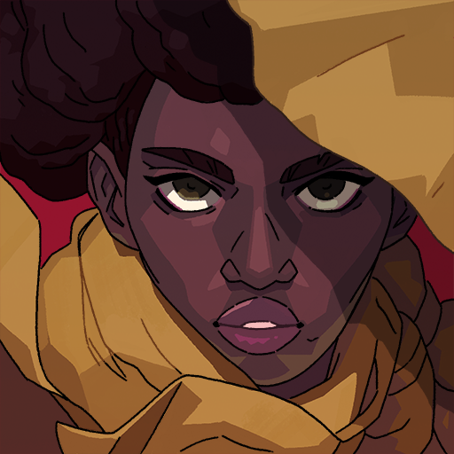
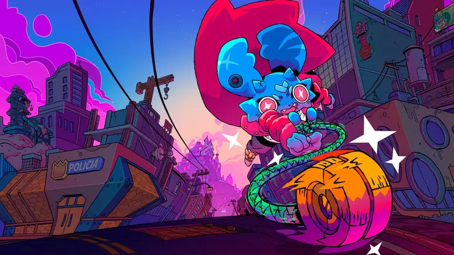
Pipistrello and the Cursed Yoyo reforça o potencial dos estúdios brasileiros
Com humor, referências locais e uma aventura inspirada nos clássicos, jogo da Pocket Trap traz carisma e jogabilidade clássica
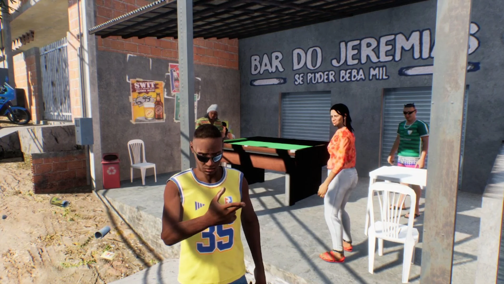
Como é o ‘GTA brasileiro’. E o que falta para ele sair
Trailer de “171” acumula mais de 1,6 milhão de visualizações no YouTube. Jogo está em desenvolvimento há mais de uma década, com campanha de arrecadação iniciada em 2018
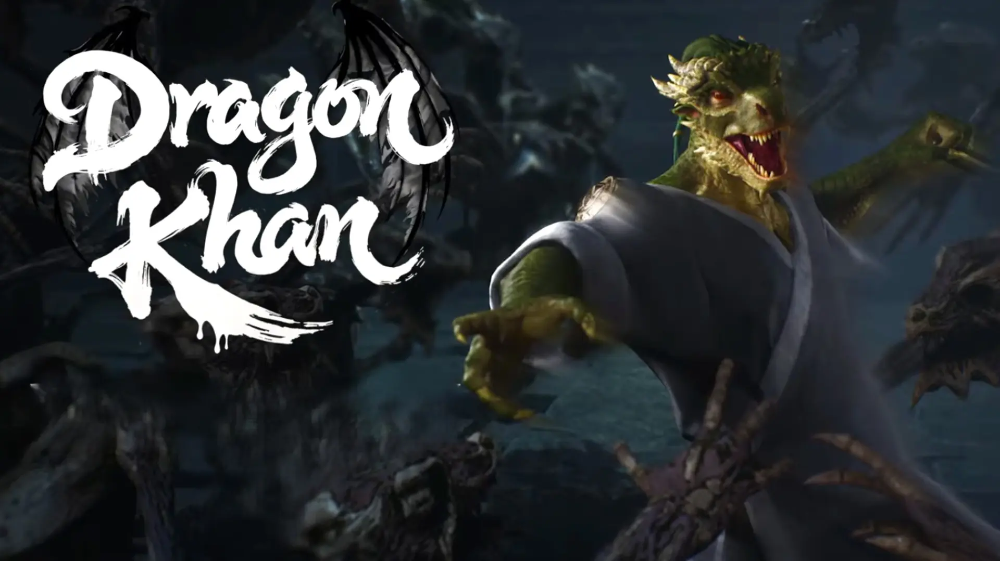
Dragon Khan | Jogo brasileiro ganha demo gratuita e trailer
Com dragão humanoide como protagonista, jogo traz inspiração em Devil May Cry e Soul Reaver
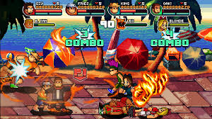
Jogo brasileiro 99Vidas está de volta e de graça
Drops de Jogos recebeu informações oficiais da QUByte. Jogo brasileiro 99Vidas está de volta e de graça. Confira detalhes abaixo.
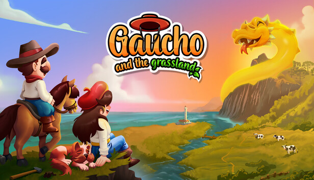
Gaúcho and The Grassland ganhará versão para mobile e também chegará para consoles
Graças a um incentivo do Google para jogos indies, Gaúcho and The Grassland, o "Stardew Valley do sul", será lançado para celular. Confira mais detalhes e entrevista com criador.
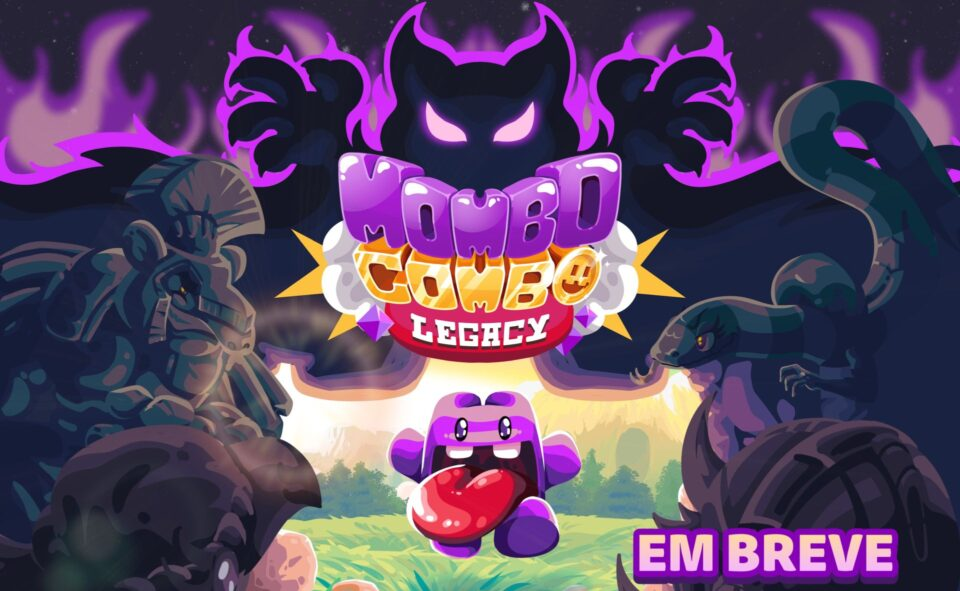
Mombo Combo Legacy, a continuação de Super Mombo Quest, chega ainda em 2024
VEM AÍ! O Mombo Combo Legacy tá mais perto do que vocês imaginam. É ESSE ANO! Pra começarmos o hype, mudamos o nosso visual!
9Kingas recebe o Rei do Tempo em sua maior e mais “imprudente” atualização
O personagem é o 9º e último Rei a ser introduzido, entregando a promessa do título e adicionando novas formas de quebrar o jogo.
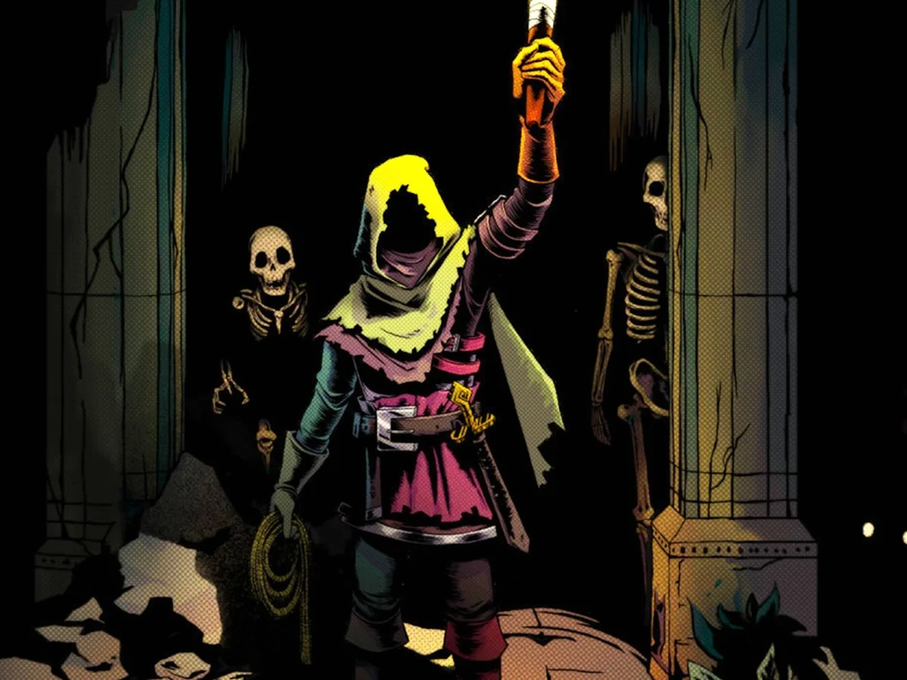
Criadores de Chroma Squad apresentam novo jogo na BGS! Conheça Deep Dish Dungeon
Dos mesmos criadores de Chroma Squad e Knights of Pen & Paper, Deep Dish Dungeon poderá ser testado em primeira mão na BGS 2025! Conheça o game brasileiro!.
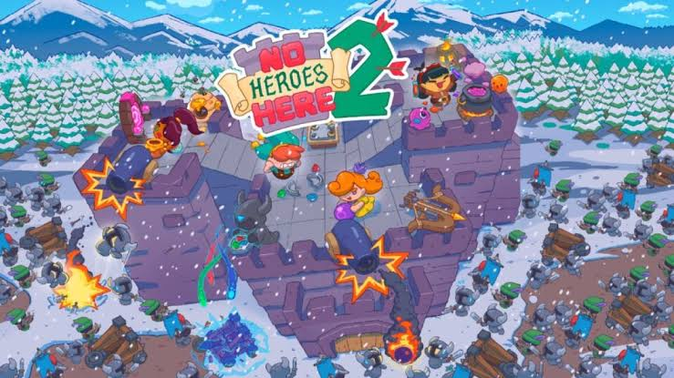
Jogo indie brasileiro No Heroes Here 2 já está disponível em acesso antecipado na Steam
Sequência do aclamado jogo da Mad Mimic tem desconto especial por tempo limitado
Dandy Ace promete ser o mágico rogue-lite do estúdio brasileiro Mad Mimic
Diferente dos dois precursores, o novo título foge do gênero tower defense, e adentra o universo do rogue-lite com algumas mecânicas bastante interessantes.